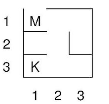
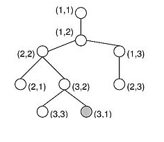

{% extends "../_base_template.html" %}
{% block title %}Lektion 9 - Entwurfsmuster, Iteration, Rekursion{% endblock %}

{% block sections %}
<section data-markdown >
<textarea data-template>
<i class="fas fa-graduation-cap"></i> Hausaufgaben von letztem Mal
=============================

Hausaufgaben von letztem Mal

* Aufgaben **Fibonacci** oder **Binäre Suche**
* Aufgabe **Unbekannter Algorithmus**

Fragen?

</textarea>
</section>

<section data-markdown >
<textarea data-template>
<i class="fas fa-graduation-cap"></i> Lektion 9 - Entwurfsmuster, Iteration, Rekursion
=============================

Ziele:

* Sie können ein paar Beispiele von Entwurfsmuster nennen
* Sie verstehen den Verwendungszweck von Entwurfsmustern
* Sie kennen die Entwurfsmuster Rekursion, Greedy Algorithm, Divide And Conquer, Backtracking
* Sie können an bestehendem Source-Code Entwurfsmuster erkennen
</textarea>
</section>

<section data-markdown >
<textarea data-template>
<i class="fas fa-graduation-cap"></i> Entwurfsmuster
=============================

Wir haben bereits das *rekursive** und **iterative Vorgehen** kennengelernt.

Wir sehen uns nun folgende **Entwufsmuster** etwas genauer an:

* **Greedy**: wir suchen maximale oder optimale Lösungen
* **Divide and conquer**: Wir teilen ein grosses Problem in kleinere (und immer kleinere) Teilprobleme
* **Backtracking**: Wir versuchen eine Lösung, und wenn die nicht geht, gehen wir zurück und versuchen einen anderen Weg

Diese Entwurfsmuster sind **keine fertigen Rezepte**, sondern nur Ideen, wie bestimmte Probleme angegangen werden können.

</textarea>
</section>

<section data-markdown >
<textarea data-template>
<i class="fas fa-graduation-cap"></i> Entwurfsmuster - Greedy
=============================

Idee
------

Greedy bedeutet "Gierig": Wir wollen mit diesem Algorithmus in jedem Teilschritt möglichst viel erreichen.

**Beispiel Münz-Rückgabe:**

* Sie müssen einen Rückgeld-Algoritmus entwerfen.
* Sie möchten mit möglichst wenig Münzen auf den Betrag kommen.
* Sie haben folgende Münzen: 5rp, 10rp, 50rp, 1Fr., 2Fr. 5Fr
* Sie müssen 13.75 rückgeben.

"Greedy" bedeutet hier: Wir versuchen, in jedem Teilschritt möglichst viel "zurückzugeben", bis der Betrag erreicht ist:

23.75 = 5Fr + 5Fr + 2Fr + 1Fr + 50rp + 20rp + 5rp

Das scheint optimal! Hier ist das lokale Optimum (Optimum in einem Schritt) auch das globale Optimum (optimales Endergebnis).

**Gegenbeispiel**

* Selbe Aufgabe, aber Sie haben nun folgende Münzen: 1rp, 5rp, 11rp.
* Geben Sie 15rp zurück!

15rp = 11rp + 1rp + 1rp + 1rp + 1rp

<i class="far fa-hand-point-right"></i> Hier erreicht man durch Greedy und lokale Optimierung kein globales Optimum (5rp + 5rp + 5rp wäre besser!)
</textarea>
</section>

<section data-markdown >
<textarea data-template>
<i class="fas fa-graduation-cap"></i> Entwurfsmuster - Greedy
=============================

Wann kann Greedy sinnvoll sein?

1. Gegebene Menge von Inputwerten (hier: Münzen)
2. Menge von Lösungen, die aus Eingabewerten aufgebaut sind
3. Lösungen lassen sich schrittweise aus partiellen Lösungen, beginnend bei der leeren Lösung, durch Hinzunahme von Eingabewerten aufbauen.
   <br />Alternativ: Bei einer ganzen Menge beginnend schrittweise jeweils ein Element entfernen
4. Bewertungsfunktion existiert für partielle und vollständige Lösung (was ist gut / schlecht)
5. Gesucht wird die / eine **optimale / maximale Lösung**

</textarea>
</section>

<section data-markdown >
<textarea data-template>
<i class="fas fa-graduation-cap"></i> Entwurfsmuster - Divide and Conquer
=============================

"Teile und Herrsche" ist ein sehr wichtiges Prinzip um Probleme zu lösen - nicht nur in Algorithmen!
Es besagt grundsätzlich, dass **ein grosses Problem in kleine Teilprobleme** aufgeteilt wird, welche in sich
einfacher zu lösen sind.

Grundidee
------------

> Teile das gegebene Problem in mehrere getrennte Teilprobleme auf, löse diese einzeln und setze die Lösungen des
ursprünglichen Problems aus den Teillösungen zusammen. Wende dieselbe Technik auf jedes der Teilprobleme an, dann auf
deren Teilprobleme, usw, bis die Teilprobleme klein genug sind, dass man eine Lösung explizit angeben kann. Strebe an,
dass jedes Teilproblem von derselben Art ist wie das ursprüngliche Problem, so dass es mit demselben Algorithmus gelöst
werden kann.


**Beispiel Mergesort**

(werden wir auch noch kennen lernen)

```
funktion mergesort(liste);
  falls (Größe von liste <= 1) dann antworte liste
  sonst
     halbiere die liste in linkeListe, rechteListe // Teile
     linkeListe = mergesort(linkeListe)            // Löse Teile separat
     rechteListe = mergesort(rechteListe)
     antworte merge(linkeListe, rechteListe)       // Zusammenführen der Teilergebnisse
```

Siehe Wikipedia: https://de.wikipedia.org/wiki/Mergesort#Implementierung
</textarea>
</section>

<section>
<section data-markdown >
<textarea data-template>
<i class="fas fa-graduation-cap"></i> Entwurfsmuster - Backtracking
=============================

Die Idee des Backtracking ist das **Versuchs-und-Irrtum-Prinzip** (trial and error).
Versuche, die erreichte Teillösung schrittweise zu einer Gesamtlösung auszubauen.
Falls die Teillösung nicht zu einer Lösung führen kann, dann nimm den letzten Schritt bzw.
die letzten Schritte zurück und probiere stattdessen alternative Wege.

Alle in Frage kommenden Lösungswege werden ausprobiert.
Vorhandene Lösung wird entweder gefunden (unter Umständen nach sehr langer Laufzeit)
oder es existiert definitiv keine Lösung.
Backtracking (“Zurückverfolgen“) ist eine allgemeine systematische Suchtechnik.

**Beispiel : Labyrinth Suche**

Folgendes Labyrinth soll systematisch durchsucht werden (Startpunkt M / Ziel K).
Daraus entsteht der Suchbaum (jeweils mit den Koordinaten des Labyrinths).




</textarea>
</section>
<section data-markdown >
<textarea data-template>
<i class="fas fa-graduation-cap"></i> Entwurfsmuster - Backtracking
=============================

**Einsatzfelder**

Zu den typischen Einsatzfeldern von Backtracking gehören zum Beispiel einige Spielprogramme (Schach, Dame, Labyrinthsuche,…).
Aber auch die Erfüllbarkeit von logischen Aussagen wie logische Programmiersprachen, Optimierung von Gattern oder Model checking (Theorembeweiser).

Ein weiteres Einsatzfeld sind Planungsprobleme und Konfigurationen wie logistische Fragestellungen
(Traveling Salesman, der kürzeste Wege, die optimale Verteilung, das Färben von Landkarten oder auch nichtdeterministisch-lösbare Probleme.

</textarea>
</section>
</section>

<section data-markdown >
<textarea data-template>
<i class="fas fa-graduation-cap"></i> Gemeinsame Übung
=============================

Wir sollen nun gemeinsam den **Pseudo-Code für das Münzproblem** erarbeiten: Dies ist ein Greedy-Algorithmus:

**Anforderung:**

Den gegebenen Betrag `B` soll der Algoritmus in vorhandene Münzen aufteilen, und zwar in möglichst kleine.
Der Algoritmus liefert eine Liste `L` mit den Münzen.

Es stehen folgende Münzen zur Verfügung:

5Rp, 10Rp, 20Rp, 50Rp, 1Fr, 2Fr, 5Fr.

Wir entwickeln gemeinsam den **Pseudo-Code** für diesen Algorithmus. Danach setzen Sie ihn in Programmcode um (Java).

</textarea>
</section>

<section data-markdown >
<textarea data-template>
<i class="fas fa-flask"></i> Anwendung: Maze Solver und Sudoku Solver
=============================

Auf Moodle finden Sie zwei (unfertige) Java-Programme:

* ein Programm, welches einen Irrgarten lösen soll:
```
██████████████████E█
█ █     ███   ████ █
█   █████████ ██   █
███ █       █ █  ███
█   █ █ ███ █ █ ████
█ █████ ███   █ █  █
█   ██   ████ █ █ ██
█ ██ █ █ ██ █ █    █
█      █    █   ██ █
████ ███████████████
```
* ein Programm, um Sudokus zu lösen

Ihre Aufgabe ist es, je einen Algorithmus zu entwerfen, um diese beiden Probleme zu lösen.

Dies sind klassische Anwendungen von Rekursion und Backtracking.
</textarea>
</section>

<section data-markdown >
<textarea data-template>
<i class="fas fa-graduation-cap"></i> weitere Übungen
=============================

Sie finden folgende Aufgaben auf Moodle:

* Greedy: Münzbeispiel (Münz-Ausgabe an Billetschalter)
* Greedy: Regale anordnen
* Divide-and-Conquer: Binary Search
* Greedy: Überleben auf einer Insel
* Greedy: Ägyptische Bruchrechnung
* Backtracking: Sudoku-Solver

**HA**:

* Münz-Algorithmus umsetzen
* Ein weiterer Greedy-Algorithmus ODER 
* Divide-and-Conquer: Binary Search
* (Optional, für Fortgeschrittene): Maze Solver (haben wir nächstes Mal noch Zeit)
* (Optional, für Fortgeschrittene): Sudoku-Solver (haben wir nächstes Mal noch Zeit)

</textarea>
</section>

{% endblock %}
